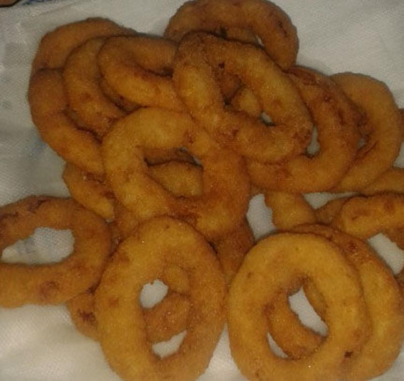

Cibulové pivní kroužky

Ingrediencie
- cibuľa - 150 g
- pšeničná múka hrubá - 62,5 g
- pivo svetlé 10° - 50 ml
- voda z vodovodu - 37,5 ml
- kypriaci prášok do pečiva Dr. Oetker - 1,5 g
- paprika sladká mletá - 1,25 g
- soľ kuchynská - 1,25 g
- slnečnicový olej - 50 ml
Postup prípravy receptu
Čas prípravy - 30 minut
- Všechny ingredience kromě oleje a cibule smícháme, abychom vytvořili těstíčko. Cibuli nakrájíme na silnější kroužky, které namočíme fo těstíčka a dame smazit do oleje. Davamet na papírovou uterku abychom odsali přebytečný olej.
- Cibuli nakrájíme na silnější kroužky, které namočíme do těstíčka a dáme smažit do oleje.
- Osmažené kroužky dáváme na papírovou utěrku, abychom se zbavili přebytečného oleje.
Energetická hodnota - 756 kcal
| Bielkoviny |
9 g |
| Sacharidy |
62 g |
| Tuky |
51 g |
| Vláknina |
9 g |
| Soľ |
2 g |
| Voda |
169 g |